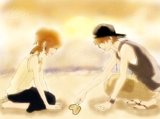
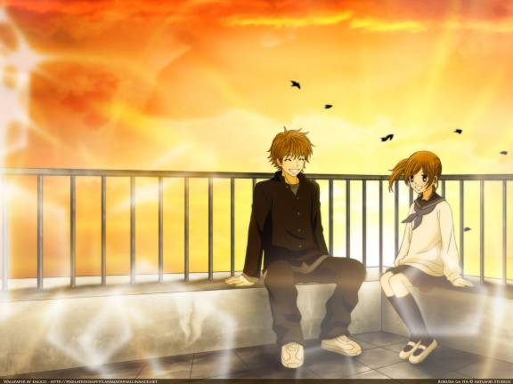
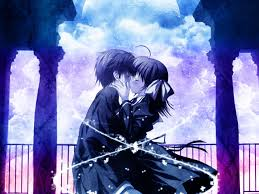
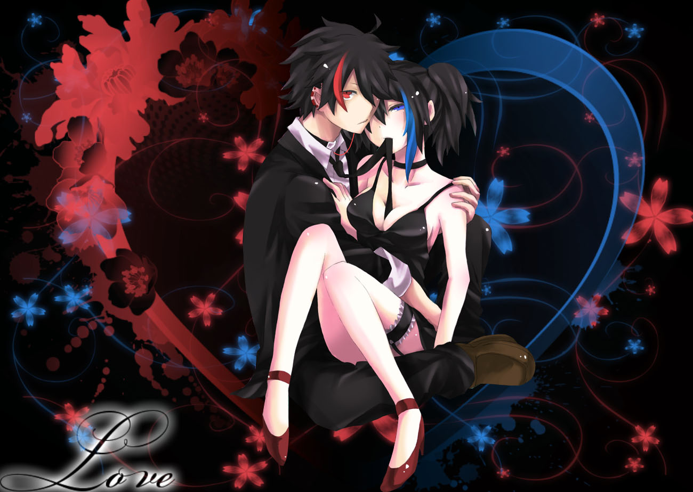
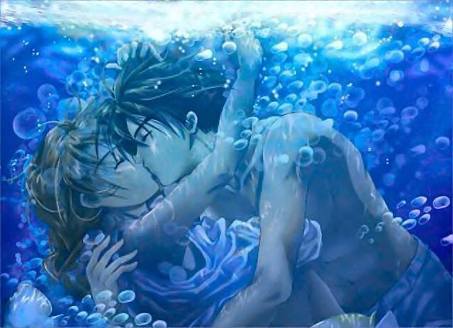

BOKURA GA ITA

Bokura ga Ita (僕等がいた? lit. en inglés We Were There o en español como Érase una vez nosotros) es un manga romántico japonés de Yuuki Obata, que se centra en la vida de una joven estudiante de primer año de preparatoria, Nanami Takahashi.
Originalmente fue publicada por la revista Betsucomi, que es dirigida básicamente para adolescentes.
El primer tankōbon del manga fue lanzado el 26 de octubre del 2002 y sigue vigente, por lo que puede decirse que es uno de los más populares.
Su versión en anime comenzó a transmitirse en Japón el 3 de julio del 2006, consta de 26 episodios.
En el 2005, el manga ganó el Premio Shōgakukan como mejor shōjo.
Es uno de los mangas shōjo más populares de Japón, recientemente ha estado en el top 10 de los más vendidos en Japón y ha permanecido muchos meses.
El manga y el anime son especialmente populares entre las adolescentes japonesas y en casi todo el mundo.
Recientemente se confirmó un live action sobre esta historia y se ha informado que esta tendrá el mismo final que la historia en el manga.
Se presentará en Japón en la primavera del 2012 y serán dos películas, la segunda se estrenará poco tiempo después de la primera, el elenco se encuentra encabezado por Toma Ikuta (como Motoharu Yano) y Yuriko Yoshitaka (como Nanami Takahashi).
Bokura ga ita (Érase una vez nosotros) relata la historia de amor entre dos estudiantes de preparatoria, Yano Motoharu y Takahashi Nanami.
Yano Motoharu tiene 2 de cada 3 chicas conquistadas en clase, es habilidoso en todo lo que quiera llevar a cabo, y es muy popular dentro de su curso.
Sin embargo, esconde un amargo pasado… Nana (Nanami Takahashi)al principio se obliga a sí misma no hacerle ningún caso, sin embargo, no puede evitar comenzar a sentir algo por él.
Al acercarse más a Yano, Nana descubrirá que su anterior novia falleció en un accidente de tráfico mientras se encontraba con otro hombre, hecho que evitó que Yano volviese a sentir amor hacia otra persona. Nana deberá entonces afrontar todo tipo de obstáculos para llegar al corazón de Yano, y al llegar a él, deberán luchar por sus sentimientos mucho más allá de los recuerdos.
close

Facebook



ANIME
La historia del anime, el género de animación de origen japonés, comienza en la segunda dKitayama en 1917.]] En 1906 aparece la primera película de animación, Humorous Phases of funny face,
del productor americano James Stuart Blackton. En 1907 se hizo la primera producción de animación japonesa, en donde sale un niño marinero.1 En 1908 aparece en Francia Fantasmagorie,
del dibujante Emile Cohl y producida por Gaumont. Este tipo de películas de animación llegan a los cines japoneses hacia 1910. Entre 1914 y 1917 se exhibieron unas 93 películas de animación
extranjeras, siendo las americanas las de mayor popularidad. Ante tal fenómeno, los productores japoneses comenzaron a plantearse la realización de cine de animación nacional.
La compañía Tennenshoku Katsudo Shashin (Tenkatsu) es quien reacciona primero, encargando en 1916 al dibujante de manga Oten Shimokawa una película del género. En aquella época no
existía documentación en Japón sobre las técnicas de animación, por lo que la tarea de Shimokawa no fue fácil. No obstante, consiguió realizar el primer filme de animación japonesa,
Imokawa Mukuzo, Genkanban no maki (Mukuzo Imokawa y el guardián de la entrada) estrenada en enero de 1917. Por su parte, el pintor de estilo occidental Seitaro Kitayama,
interesado por las películas extranjeras de animación que veía, presenta un proyecto de realización propia a la compañía Nippon Katsudo Shashin (Nikkatsu), que ésta acepta encargarle.
Kitayama tampoco era un experto en la animación, pero a base de pruebas y errores, consiguió terminar Saru Kani gassen (La batalla del mono y el cangrejo), basada en un cuento
popular japonés, que fue estrenada en mayo de 1917. Shimokawa y Kitayama comenzaron la realización de sus películas en 1916, coincidiendo con la puesta en marcha del dibujante de
manga de corte político Sumikazu Kouchi, que por encargo ahora de la compañía Kobayashi Shokai, estrenaría en junio de 1917 Hanawa Hekonai, Shinto no maki (Hekonai Hanawa y su nueva espada),
con un samurái como protagonista.
La historia del cine de animación japonés comienza efectivamente en 1917 gracias a los trabajos de estos tres pioneros, pero no se conserva copia de ninguna de estas películas
por lo que se desconocen otros datos. La de Kouchi fue la más elogiada de ellas por las críticas de la época, siendo además la primera en rodarse, aunque se estrenara después de
las otras dos.
Shimokawa llegó a realizar cinco películas de animación, pero debido a la sobreexposición al reflejo luminoso que conllevaba el proceso, sus ojos experimentaban gran cansancio,
por lo que decidió abandonar este trabajo y volver a dibujar manga. Kouchi también se apartó del cine de animación tras realizar cuatro películas, pero luego volvería temporalmente
a este campo debido a que personalidades de la esfera política le encargaron cortos de propaganda. Por el contrario, Kitayama, se dedicó plenamente a la realización de películas de
animación. Comenzó empleando como ayudantes a jóvenes aspirantes a pintores, a los que enseñaba las técnicas del dibujo animado. Kitayama, que en 1917 llegó a realizar hasta diez películas,
presenta ese mismo año una película basada en el personaje infantil Momotaro, que consigue exportar a Francia, convirtiéndose en el primer producto de animación japonesa que llega a occidente.
Kitayama crea sus propios estudios de cine en 1921 pero el Gran terremoto de Kanto de 1923 destruirá sus instalaciones de Tokio, por lo que decide mudarse a Osaka.
Allí se aparta de los dibujos animados para dedicarse a rodar documentales informativos para una empresa de noticias local. No obstante, la gran importancia de la labor de Kitayama
residirá en haber enseñado las técnicas de la animación a una serie de jóvenes que proseguirán el trabajo que él empezó.
Uno de estos fue Sanae Yamamoto, (cuyo nombre original era Zenjiro Yamamoto). Era un aspirante a pintor que acudió a trabajar a los estudios de Kitayama, donde quedó fascinado por el
mundo del dibujo animado. Al marcharse su maestro de Tokio, Yamamoto decide independizarse y formar sus propios estudios de animación. En 1925 realiza Ubasute yama (La montaña donde
se abandona a los viejos), que tiene como tema el respeto y cuidado de los ancianos. Consigue el patrocinio de la Secretaría de Educación para una serie de películas de animación de
corte educativo, y entre sus obras más representativas se encuentran Usagi to Kame (El conejo y la tortuga, 1924) y Nippon ichi no Momotaro (Taro Melocotón, el número 1 de Japón, 1928).
También de esta época es Shiobara Tasuke, dirigida por Hakuzan Kimura. Éste trabajaba pintando murales de anuncio para las salas cinematográficas, pero cambia su profesión para dedicarse
a los dibujos animados, destacando pronto por sus historias de samuráis. En 1932 rueda la primera película erótica de la animación japonesa, Suzumi-Bune (El paseo nocturno en barco),
que le cuesta ser detenido por la policía, que además confisca la película. Kimura, individuo del que se desconocen muchas cosas, entre ellas las fechas de nacimiento y muerte, se
retirará tras este incidente. Existen rumores de que una copia fue vendida ilegalmente al extranjero, pero en cualquier caso Suzumi-Bune se convirtió en una película fantasma,
imposible de ver. Al parecer se trataba de un traslado a la pantalla del mundo erótico creado por los artistas del Ukiyo-e del período Edo.
Otro discípulo de los pioneros (en este caso de Sumikazu Kouchi) fue Noburo Ofuji, que empezó la producción de dibujos animados gracias a la ayuda económica de su hermana mayor,
Yae, siendo su primera película Baguda-jo no tozoku (El ladrón del castillo de Baguda, 1926). Como material de trabajo utilizaba el tradicional papel Chiyo, popular desde el período Edo,
pero sus colores no pudieron ser recogidos por la fotografía en blanco y negro de la época. Ofuchi también realizó varias películas de animación con siluetas, como fue el caso de Kujira
(La ballena, 1927), cuyas imágenes hizo acompañar con la música de la ópera Guillermo Tell de Rossini. Ofuchi dedicó mucho tiempo a estudiar la posibilidad del cine sonoro y en color, y
gracias a la ayuda de su hermana, consiguió realizar casi todas sus películas prácticamente solo.
En 1923, año del Gran terremoto de Kanto, Yasuji Murata ingresa en la recién formada Yokohama Cinema Shokai, en principio dedicada a la importación de películas extranjeras. Murata comienza
a trabajar allí pintando esporádicamente murales de películas para los cines, pero el presidente de la compañía le contrata como empleado fijo al ver su talento para el dibujo. Murata también
escribía los rótulos para las películas extranjeras de la compañía, pero, impresionado por las películas de animación de John Randolph Bray que aquella importaba, propone a su presidente
la producción propia de cintas similares. Autodidacta de la materia, Murata escoge una popular historia infantil para su primera realización, Saru Kani gassen (La batalla del mono y el
cangrejo, 1927). Desde entonces hasta que deja la compañía en 1937, Murata rueda cerca de 30 películas de dibujos animados, la mayoría de corte educativo.
E-mail
sakura.coketa@hotmail.com